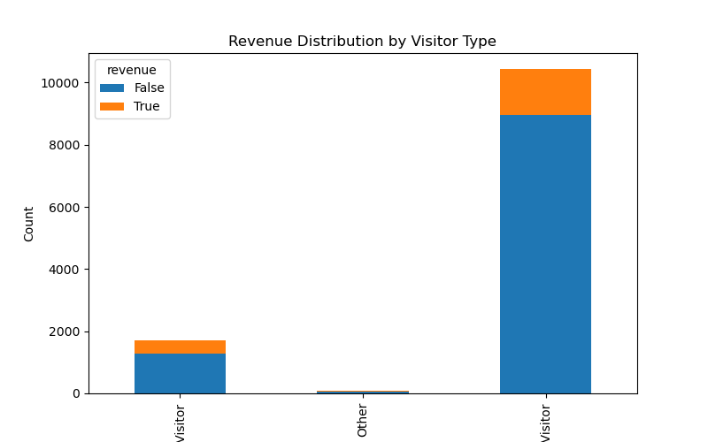
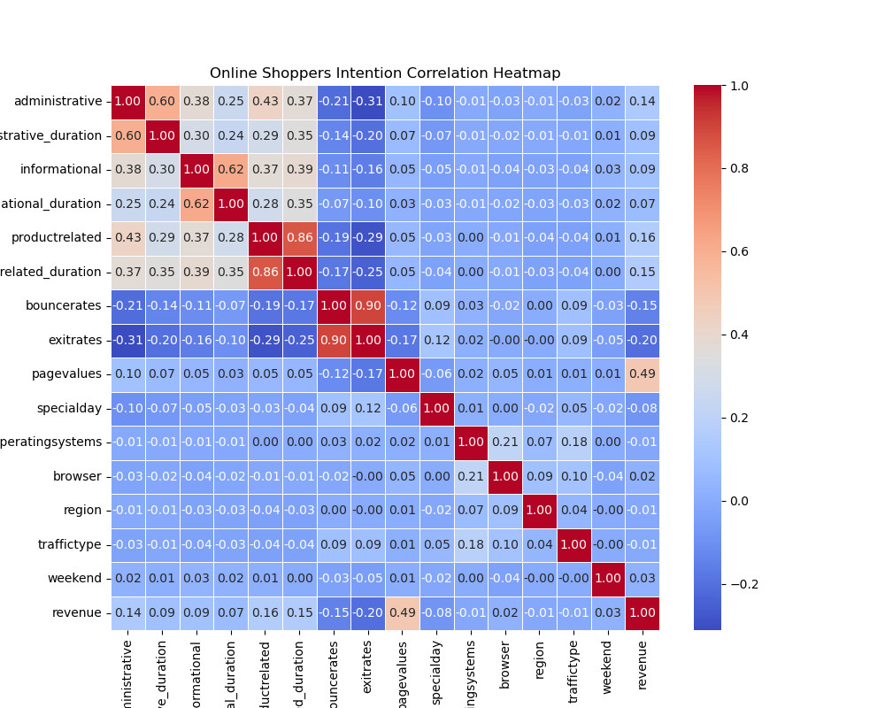
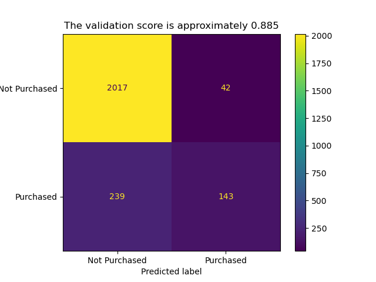

| administrative | administrative_duration | informational | informational_duration | productrelated | productrelated_duration | bouncerates | exitrates | pagevalues | specialday | month | operatingsystems | browser | region | traffictype | visitortype | weekend | revenue | |
|---|---|---|---|---|---|---|---|---|---|---|---|---|---|---|---|---|---|---|
| 0 | 0 | 0.0 | 0 | 0.0 | 1 | 0.000000 | 0.20 | 0.20 | 0.0 | 0.0 | Feb | 1 | 1 | 1 | 1 | Returning_Visitor | False | False |
| 1 | 0 | 0.0 | 0 | 0.0 | 2 | 64.000000 | 0.00 | 0.10 | 0.0 | 0.0 | Feb | 2 | 2 | 1 | 2 | Returning_Visitor | False | False |
| 2 | 0 | 0.0 | 0 | 0.0 | 1 | 0.000000 | 0.20 | 0.20 | 0.0 | 0.0 | Feb | 4 | 1 | 9 | 3 | Returning_Visitor | False | False |
| 3 | 0 | 0.0 | 0 | 0.0 | 2 | 2.666667 | 0.05 | 0.14 | 0.0 | 0.0 | Feb | 3 | 2 | 2 | 4 | Returning_Visitor | False | False |
| 4 | 0 | 0.0 | 0 | 0.0 | 10 | 627.500000 | 0.02 | 0.05 | 0.0 | 0.0 | Feb | 3 | 3 | 1 | 4 | Returning_Visitor | True | False |
Predicting Online Shopping Purchase Behavior
DSCI 310, Group 2 Authors: Aidan Aimy, Adrian Chan, Yujia Huang, Renata Lovette
This project investigates whether website engagement metrics can predict whether an online visitor will complete a purchase on an e-commerce website. Specifically, we will examine behavioural indicators such as the number of pages visited, time spent on different types of pages, and engagement metrics such as bounce rate and exit rate.
Using the Online Shoppers Purchasing Intention Dataset, we perform exploratory data analysis and build a classification model to determine whether browsing behaviour can predict whether a visitor will generate revenue for the website.
Understanding these relationships may help businesses better understand online consumer behaviour and optimize website design and marketing strategies.
Introduction
E-commerce platforms collect large amounts of behavioural data about how users interact with websites. Metrics such as the number of pages visited, time spent browsing products, and bounce rates can provide insight into customer engagement and purchase intent. Understanding which behavioural signals are associated with successful purchases can help businesses improve their online shopping experience.
In this project, we analyze user session data from an e-commerce website to investigate whether engagement metrics can predict whether a visitor completes a purchase.
Research Question
Can website engagement metrics (such as page visits, time spent on pages, and bounce rate) predict whether an online visitor will make a purchase?
Dataset
The dataset used in this project is the Online Shoppers Purchasing Intention Dataset from the UCI Machine Learning Repository.
The dataset contains information about user browsing sessions on an e-commerce website. Each row represents a user session and includes both behavioural metrics and contextual information about the visit.
Key behavioural variables include:
- Administrative (number of administrative pages visited)
- Administrative_Duration (time spent on administrative pages)
- Informational (number of informational pages visited)
- Informational_Duration (time spent on informational pages)
- ProductRelated (number of product-related pages visited)
- ProductRelated_Duration (time spent on product-related pages)
- BounceRates (percentage of visitors who leave after viewing one page)
- ExitRates (percentage of exits from a page)
- PageValues (average value of a page before a purchase)
- SpecialDay (proximity to special shopping days)
The dataset also includes categorical variables such as month, operating system, browser type, region, traffic source, visitor type, and whether the session occurred on a weekend.
The target variable for this project is Revenue, which indicates whether a visitor completed a purchase during the session.
Methods
Data
The dataset used in this project is the Online Shoppers Purchasing Intention Dataset. Data were first loaded and saved locally using a data ingestion script, followed by a cleaning step that standardized column names and removed duplicate rows.
The cleaned dataset is used for all subsequent analysis.
Exploratory Data Analysis
Exploratory data analysis (EDA) helps us understand the distribution of variables and potential relationships between website engagement metrics and purchasing behaviour.
Revenue Distribution
| Unnamed: 0 | revenue | Count | |
|---|---|---|---|
| 0 | 0 | False | 10297 |
| 1 | 1 | True | 1908 |
As shown in Table 2, most sessions did not result in purchases, indicating a class imbalance.
Revenue by Visitor Type

Figure Figure 1 shows that returning visitors contribute more to purchases compared to new visitors.
Correlation Map of features

As shown in Figure 2, several engagement features are moderately correlated, suggesting potential predictive relationships.
Classification Model
Because the target variable Revenue indicates whether a purchase occurred (True or False), this problem is formulated as a binary classification problem.
We will train a logistic regression model using website engagement metrics to predict whether a visitor completes a purchase. We chose a logistic regression model because it is well suited for a binary classification problem. We begin by splitting the dataset into training and testing data using an 80/20 ratio. Then we standardized our data using StandardScaler() to prevent variables of greater magnitude from having a disproportionate influence on the model before fitting it the LogisticRegression model from the Scikit-Learn library.
Model Evaluation
To evaluate the performance of the classification model, we will use metrics such as:
- Accuracy
- Confusion matrix
These metrics will help assess how well the model predicts purchasing behaviour.

Discussion
In this project, we investigated whether website engagement metrics can be used to predict whether an online visitor completes a purchase. We explored patterns in browsing behaviour and used a logistic regression classification model to determine whether behavioural indicators such as page visits, browsing duration, and bounce rates could predict purchasing outcomes.
The initial model achieved an overall accuracy of approximately 0.878 on the test dataset. The confusion matrix shows that the model correctly classified a large majority of non-purchasing visitors (2035 true negatives) while making relatively few false positive predictions (49). This suggests that the model is effective at identifying users who are unlikely to complete a purchase.
However, the model performs less effectively when identifying actual purchasers. Out of 382 visitors who made a purchase, only 130 were correctly classified, while 252 were misclassified as non-purchasers. This corresponds to a relatively low recall for the purchase class. In practical terms, the model tends to be conservative and predicts “Not Purchased” more frequently, which likely reflects the imbalance in the dataset where non-purchasing visitors are much more common.
To address this limitation, we explored the use of class weighting in the logistic regression model by setting class_weight=“balanced”. This approach assigns greater importance to the minority class (purchasers) during training, penalizing the model more heavily when purchasing sessions are misclassified. By reweighting the classes, the model is encouraged to pay greater attention to behavioural patterns associated with purchases, which can help improve recall for the purchase class.
Despite this limitation, the results demonstrate that behavioural engagement metrics contain meaningful predictive information about purchase intent. Features related to browsing activity appear to capture patterns associated with purchasing behaviour, even when using a relatively simple logistic regression model.
Future work could improve predictive performance in several ways. First, more advanced models such as random forests, gradient boosting methods, or neural networks may capture nonlinear relationships between browsing behaviour and purchasing outcomes. Second, techniques for handling class imbalance, such as resampling methods or adjusting classification thresholds—could improve the model’s ability to detect purchasers. Finally, incorporating additional features such as user demographics, marketing channel information, or historical customer behaviour could provide a more comprehensive view of user intent and lead to stronger predictive performance.
References
Carmona, C. J., et al. “Web Usage Mining to Improve the Design of an E-commerce Website: OrOliveSur.com.” Expert Systems With Applications, vol. 39, no. 12, Apr. 2012, pp. 11243–49, doi:10.1016/j.eswa.2012.03.046.
M. A. Awad and I. Khalil, “Prediction of User’s Web-Browsing Behavior: Application of Markov Model,” in IEEE Transactions on Systems, Man, and Cybernetics, Part B (Cybernetics), vol. 42, no. 4, pp. 1131-1142, Aug. 2012, doi: 10.1109/TSMCB.2012.2187441.
Sakar, Cemal Okan et al. “Real-time prediction of online shoppers’ purchasing intention using multilayer perceptron and LSTM recurrent neural networks.” Neural Computing and Applications 31 (2018): 6893 - 6908.
Van Den Poel, Dirk, and Wouter Buckinx. “Predicting Online-purchasing Behaviour.” European Journal of Operational Research, vol. 166, no. 2, July 2004, pp. 557–75, doi:10.1016/j.ejor.2004.04.022.